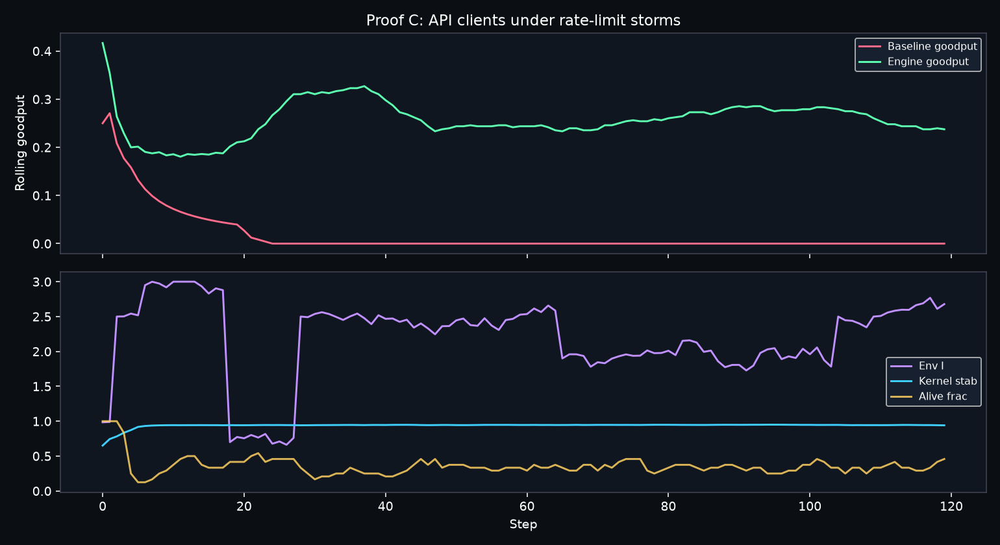

Problem: Shared API budget. Storms cut capacity; retries stampede; clients burn out.
Metric: goodput = successes / n_clients (killing clients cannot fake a win).
Approach: KERNEL_v1 — shield load, cool retries, quarantine worst, revive when healthy.
| Baseline | Engine | Δ | |
|---|---|---|---|
| Mean goodput | 0.018 | 0.257 | +0.239 |
| Late goodput | 0.000 | 0.263 | +0.263 |
| p10 floor | 0.000 | 0.199 | +0.199 |
| Late clients alive | 0.0 | 8.2 | +8.2 |
| Kernel late | — | 0.945 | target 0.92 |
Verdict: ENGINE HELPS
